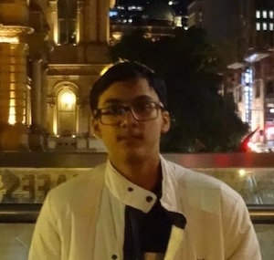
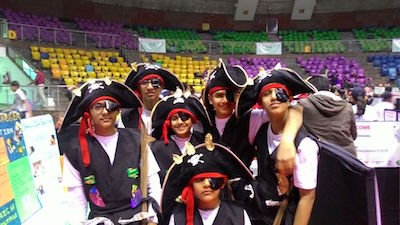
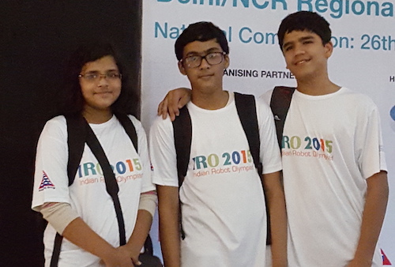
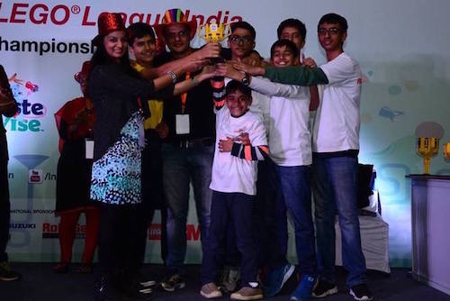
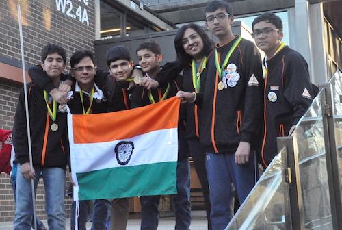
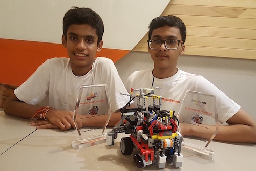

Welcome
PROFILE

Hello! I am Prakhar Mittal, I was born in a small town called Saharanpur in India, on 26th May 2002; and as you
might guess- I am 14 years old. I attend Delhi Public School, in Gurgaon, where I am living since the past eight
years. Since a young age, I enjoyed tackling challenges and had a passion for pursuing my interests. I spend
quite a lot of time working on my computer: surfing the Internet, watching videos, following my favourite
topics, trying out new programming languages and making short films.
I am told I excel in studies, even when I am always busy in pursuing my hobbies. I have been learning to play the piano since I was seven, and as of now, am scheduled to appear for Trinity College London's Grade 7 Exam. In my free time, I listen to songs, and play them on my piano, or compose my own music using Logic Pro. Moreover, I love playing with my camera and learning fancy film-editing skills on Final Cut Pro. Web development is another one of my several interests.
I like to work in groups and am good at planning and organizing the group. I am good at problem identification and show quick logical understanding as well. These qualities, and my natural passion for programming, introduced me to the world of STEM Education.
I eventually became a part of Team HIGH VOLTAGE, which exposed me to the world of robotics. We participated in the World Robot Olympiad 2015, which helped me to learn communication and teamworking skills. In the First Lego League season, I was introduced to the mechanical aspect of building a robot, which was one sphere where I originally lacked. FLL helped me open up by providing me opportunities of interacting with people across the globe and express my opinions in front of others.
Currently, I am participating in the Rap the Scrap season of the World Robot Olympiad, and I look forward to it.
I am told I excel in studies, even when I am always busy in pursuing my hobbies. I have been learning to play the piano since I was seven, and as of now, am scheduled to appear for Trinity College London's Grade 7 Exam. In my free time, I listen to songs, and play them on my piano, or compose my own music using Logic Pro. Moreover, I love playing with my camera and learning fancy film-editing skills on Final Cut Pro. Web development is another one of my several interests.
I like to work in groups and am good at planning and organizing the group. I am good at problem identification and show quick logical understanding as well. These qualities, and my natural passion for programming, introduced me to the world of STEM Education.
I eventually became a part of Team HIGH VOLTAGE, which exposed me to the world of robotics. We participated in the World Robot Olympiad 2015, which helped me to learn communication and teamworking skills. In the First Lego League season, I was introduced to the mechanical aspect of building a robot, which was one sphere where I originally lacked. FLL helped me open up by providing me opportunities of interacting with people across the globe and express my opinions in front of others.
Currently, I am participating in the Rap the Scrap season of the World Robot Olympiad, and I look forward to it.
PROJECTS
World Robot Olympiad 2015:
The World Robot Olympiad is a global robotics competition for young people. First held in 2004 in Singapore, it now attracts more than 20,000 teams from nearly 60 countries. The competition consists of 4 categories: Regular, College, Open and Soccer. Regular and Open categories consist of three age groups: Elementary, Junior High and Senior High. It is based on the idea that students from all over the world should have the opportunity to meet with other students to develop creativity, design and problem solving skills through challenging and educational robot competitions and activities.
The 2015 Regular Junior High challenge 'Treasure Hunt' required a robot to autonomously navigate around an unknown region finding and collecting good artefacts while staying safe and away from the invalid artefacts. Our robot solved the coordinate system with its wonderful sense of coordinates and direction, and ended back in the start area earning full points.
Awards and Achievements
- Full score in Delhi-NCR Regionals and Indian Championship both.
- 2nd overall position in Delhi-NCR Regionals
- 7th overall position in Indian Championship
FIRST LEGO League 2015-16:
FIRST LEGO League is an international competition organized for middle school students. Each August, FIRST LEGO League introduces a scientific and real-world challenge for teams to focus and research on. The robotics part of the competition involves desigining and programming LEGO Mindstorms robots to complete tasks. The students work out solutions to the various problems they are given and then meet for tournaments to share their knowledge, compare ideas, and display their robots.
Trash Trek, the 2015-16 theme of the FIRST LEGO Challenge focused on imporving the current way of trash management. The robot game involved some tasks such as cleaning up plastic bags, using methane from a landfill to power factories and transport, sort waste, among other tasks.
Our robot 'Bolt' later 'Bolt 2.O' was simple and sleek yet swift and efficient. Our entire run was space out with maximum time utilization and minimum base time. Our project focused on improving trash collection and then making a high-quality fertilizer out of biodegradable waste and to use non-biodegradable waste as polymer fibres.

Awards and Achievements
- Best 'Robot Performance' in Delhi-NCR Regionals
- Best 'Project Research and Presentation' in Delhi-NCR Regionals
- 2nd overall position in Delhi-NCR Regionals
- Best 'Robot Design' in Indian Championship
- 3rd overall position in Indian Championship
- Recommended for Best Core Values in FLL Asia Pacific Invitational, Sydney
MEDIA GALLERY

WRO 2015

FLL India 2015-16

FLL Asia-Pacific 2015-16

WRO 2016